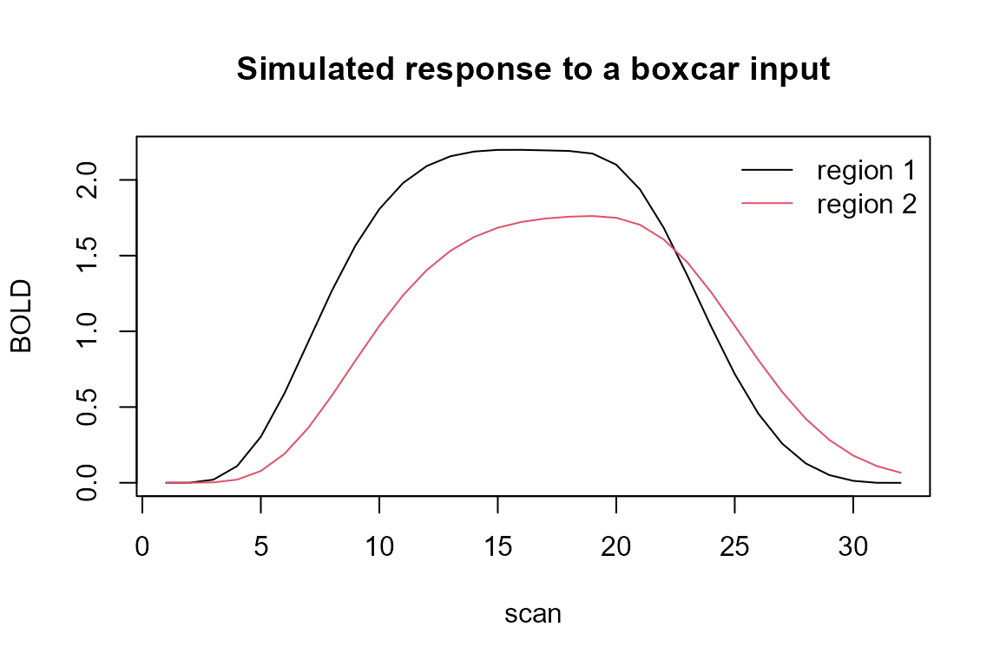

rsDCM is an R port of the Dynamic Causal Modelling (DCM)
routines from the MATLAB SPM25 toolbox. It estimates effective
connectivity among brain regions from fMRI BOLD time series using
variational Laplace inversion (Friston et al., 2003).
This vignette walks through a minimal end-to-end example using the
toy_dcm dataset shipped with the package.
The package includes a three-region, 482-scan DCM with a single
driving input, derived from the fMRI data of Valério et al. (2025)
during package development (see ?toy_dcm).
data(toy_dcm)
str(toy_dcm, max.level = 1)
#> List of 11
#> $ name : chr "DCM_model"
#> $ n : int 3
#> $ v : num 482
#> $ Y :List of 5
#> $ U :List of 3
#> $ xY :List of 3
#> $ a : num [1:3, 1:3] 1 1 1 1 1 1 1 1 1
#> $ b : num [1:3, 1:3, 1] 0 0 0 1 0 0 0 1 0
#> $ c : num [1:3, 1] 0 0 1
#> $ options:List of 10
#> $ TE : num 0.04
c(regions = toy_dcm$n, scans = toy_dcm$v)
#> regions scans
#> 3 482The structure follows the SPM25 convention:
a, b, c are the connectivity
/ modulatory / driving adjacency arrays. (A fourth array,
d, specifies non-linear connections; this model is
deterministic, so it has none.)Y$y is the BOLD data (rows = scans, columns =
regions).U$u is the input design at the microtime
resolution.options controls the model variant (deterministic,
two-state, etc.).Before inverting anything, look at the forward model on its own.
dcm_int integrates a model and returns the predicted BOLD,
and it is fast enough to run here. We build priors for a two-region
model, then switch on a driving input to region 1 and a connection from
region 1 to region 2:
n <- 2L
pri <- dcm_fmri_priors(A = matrix(1, n, n),
B = array(0, c(n, n, 1)),
C = matrix(c(1, 0), n, 1),
D = array(0, c(n, n, 0)),
options = list())
U <- list(u = matrix(c(rep(1, 16), rep(0, 16)), ncol = 1), dt = 1)
M <- list(f = "dcm_fx_fmri", g = "dcm_gx_fmri", x = pri$x,
m = ncol(U$u), n = length(pri$x), l = nrow(pri$x), ns = 32)
P <- pri$pE
P$C[1, 1] <- 1 # input drives region 1
P$A[2, 1] <- 0.4 # region 1 -> region 2
y <- dcm_int(P, M, U)
matplot(y, type = "l", lty = 1, xlab = "scan", ylab = "BOLD",
main = "Simulated response to a boxcar input")
legend("topright", c("region 1", "region 2"), lty = 1, col = 1:2, bty = "n")
Region 2 responds only because of the A[2, 1]
connection. That coupling is what the inversion below recovers.
Inverting toy_dcm runs the full Gauss-Newton loop and
takes roughly 75 seconds, so it is not evaluated when this vignette is
built. Run it yourself to reproduce the output shown below.
fit <- dcm_estimate(toy_dcm)dcm_estimate returns the input DCM augmented with
posterior fields:
Ep: posterior expectation of the parameters (same shape
as the prior).Cp: posterior covariance.F: variational free energy (the log-evidence proxy used
for model comparison).y, R: predicted BOLD and residuals.
round(fit$Ep$A, 3) # estimated connectivity
fit$F # log-evidenceBy default progress messages are emitted via message();
suppress them with suppressMessages() if you are
scripting.
For nested model comparison (Bayesian model reduction), use
dcm_log_evidence with the original posterior and the
reduced prior. For an approximate AIC / BIC summary of a single fit, use
dcm_evidence.
ev <- dcm_evidence(fit)
ev$aic_overall
ev$bic_overallThe finite-difference step used by the numerical Jacobian is exposed
via rsdcm_options():
rsdcm_options()$GLOBAL_DX
#> [1] 0.0003354626The default exp(-8) is what SPM25 uses; widen it
(e.g. 1e-4) if you observe numerical issues with very flat
regions of the likelihood.
The package’s main method, rsdcm(), fits a robust and
sparse group-level model to subject-level DCM estimates: Student-t
weighting of subjects, a nonlocal product-moment (pMOM) spike-and-slab
prior for sparse selection of group effects, and ReML variance
components (Arhin and Sanyal, 2026). It ships narps_dcm, a
48-subject example derived from the openly shared NARPS dataset
(Botvinik-Nezer et al., 2020); see ?rsdcm for a runnable
example.
rsDCM is a derivative work of the MATLAB SPM25 toolbox,
distributed under GPL-2 by the Wellcome Centre for Human Neuroimaging.
See the LICENSE.note file in the package source for the
list of ported routines.